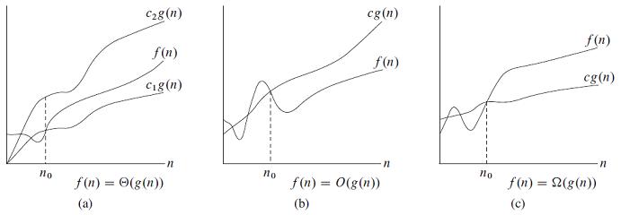
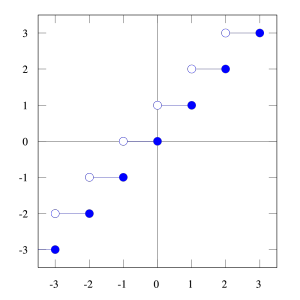
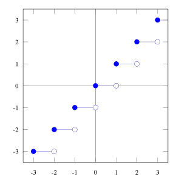
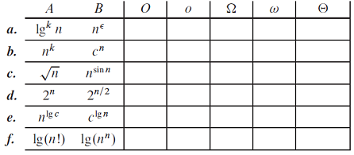
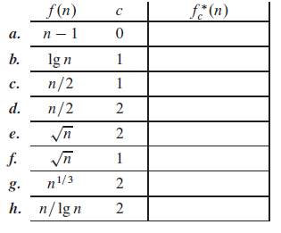

3장은 알고리즘의 점근적 분석을 단순하게 해주는 몇 가지 표준 메서드를 제공한다. 3.1절은 "점근적 표기"의 몇 가지 종류를 정의하는 것부터 시작한다. 점근적 표기의 예를 Θ-notation에서 이미 보여주었다. 그 후에 이 책 전반에서 사용하는 몇몇 표기 규칙을 알아본다. 마지막은 알고리즘 분석에서 흔하게 나타나는 함수의 동작을 검토한다.
3.1 Asysmptotic notation
이 절에서는 기본적인 점근적 표기를 정의하고, 일반적인 오용(誤用, abuse)을 소개한다.
Asymptotic notation, functions, and running times
입력에 상관없이 실행시간의 특징을 기술하는데 알맞는 점근적 표기를 살펴 본다.
Θ-notation
Θ(g(n)) = {f(n) : there exist positive constants c₁, c₂, and n0 such that
0 ≤ c₁g(n) ≤ f(n) ≤ c₂g(n) for all n ≥ n0}.
발음 : Θ(g(n)) - theta of g of n
f(n) ∈ Θ(g(n)) 대신에 f(n) = Θ(g(n))로 표시한다.
(지금은 혼란스러울 수 있지만, 나중에 이러한 오용이 도움이 된다는 사실을 설명할 것이다.)
n ≥ n0 에 대해서, f(n)은 상수 내에 있는 g(n)과 같다. f(n)에 대해 g(n)은 점근적으로 비좁은 범위(asymptotically tight bound)이다.
Θ(g(n))가 성립하기 위한 전제 : 충분히 큰 n값을 가지면서, f(n) ∈ Θ(g(n))을 만족하는 모든 원소에 대해 점근적으로 음(陰)이면 안된다. (이 전제는 다른 점근적 표기에도 적용된다)
증명
C₁= 1/14 , C₂= 1/2 , n0 = 7 ( C₁은 n=6일 때, C₁≤ 0 이기에 n≥7이다. C₂는 n=1부터 만족하므로, 1/2 ≤ C₂이다. n≥1 이다. 따라서, C₁,C₂를 동시에 만족하는 n0는 7이다. )
차수 0인 다항식을 가진 상수가 있기 때문에, 상수 함수를 Θ(n^0) 또는 Θ(1)로 표시할 수 있다. 이러한 표기는 사소한 오용이다. 식이 어느 변수가 무한으로 가는지를 나타내지 않기 때문이다. 앞으로 변수의 관점에서 상수 또는 상수 함수를 의미하는 Θ(1) 표기를 자주 사용할 것이다.

그림 3.1 Θ, Ο, Ω 표기를 나타낸 도표
O-notation
Ο(g(n)) = {f(n) : there exist positive constants c and n0 such that
0 ≤ f(n) ≤ cg(n) for all n ≥ n0}.
Ο(g(n)) 발음 : Big-O of g of n 또는 O of g of n
점근적인 상계(upper bound)만 있을 때, Ο-표기를 사용한다. (상계는 f(n)보다 높은 영역을 뜻한다)
f(n) = Ο(g(n)) 은 f(n)이 Ο(g(n)) 집합의 원소라는 것을 뜻한다.
Θ-표기가 Ο-표기보다 더 강한 표기이기 때문에, f(n) = Θ(g(n)) 은 f(n) = Ο(g(n)) 을 수반한다. 이것을 집합이론적으로 쓰면 다음과 같다. Θ(g(n)) ⊆ Ο(g(n)).
Ο-표기는 모든 입력에 대해 경계를 갖을 수 있다. 그러나 Θ-표기는 그렇지 않다. 삽입 정렬에서 모든 값이 정렬 되어있을 경우에 실행시간은 Θ(n²) 이 아니고 Θ(n)이다.
입력 크기 n이 어떤 값이냐에 따라 실행시간이 바뀌기 때문에, 삽입 정렬의 실행 시간이 Ο(n²) 이다라고 말하는 것은 기술적으로 오용이다. 이것은 실행 시간이 Ο(n²)라고 할 때, 입력 크기에 상관없이 'f(n)이 Ο(n²)이다'라는 것을 의미한다. 즉, worst-case 실행 시간은 Ο(n²)이다.
Ω-notation
Ω(g(n)) = {f(n) : there exist positive constants c and n0 such that
0 ≤ cg(n) ≤ f(n) for all n ≥ n0}.
Ω(g(n)) 발음 : Omega of g of n
Theorem 3.1
For any two functions f(n) and g(n), we have f(n) = Θg(n)) if and only if f(n) = Ο(g(n)) and f(n) = Ω(g(n)).
※ 참고 : if and only if 는 필요충분조건이다.
입력 크기가 얼마인지, 어떻게 정렬됐는지에 따라 표기가 바뀐다. ex) 삽입정렬 실행시간이 Ω(n) 이거나 Ω(n²) 일 수 있다.
Asymptotic notation in equations and inequalities
수학 공식에도 점근적 표기를 사용한다. 예를 들면, 2n²+3n+1= 2n²+Θ(n) 에서 f(n) = Θ(n) 이고, f(n) = 3n+1 로 표시한다.
표기에 따른 다양한 함수가 존재한다. ( e.g., 2n²+Θ(n) = Θ(n²) 식에서 f(n) ∈ Θ(n) 이면, 모든 n에 대하여 g(n) ∈ Θ(n²) , 2n²+f(n) = g(n) )
o-notation
o(g(n)) = {f(n) : for any positive constant c > 0, there exists a constant n0 > 0
such that 0 ≤ f(n)＜ cg(n) for all n ≥ n0}.ex) 2n = o(n²) , 2n² ≠ o(n²)
O와 o의 차이 : O는 특정 상수만 가능하고, o는 모든 상수가 가능하다.
점근적으로 음이 안되게 하기 위해서 다음 정의를 사용하여 함수를 제한한다.
ω-notation
ω(g(n)) = {f(n) : for any positive constant c > 0, there exists a constant n0 > 0
such that 0 ≤ cg(n)＜ f(n) for all n ≥ n0} .
ex) n²/2 = ω(n) , n²/2 ≠ ω(n²)
f(n) ∈ ω(g(n)) if and only if g(n) ∈ o(f(n))
극한이 존재한다면 f(n) = ω(g(n)) 은 다음 식을 만족한다.
Comparing functions
Transitivity:
f(n) = Θ(g(n)) and g(n) = Θ(h(n)) imply f(n) = Θ(h(n))
f(n) = Ο(g(n)) and g(n) = Ο(h(n)) imply f(n) = Ο(h(n))
f(n) = Ω(g(n)) and g(n) = Ω(h(n)) imply f(n) = Ω(h(n))
f(n) = o(g(n)) and g(n) = o(h(n)) imply f(n) = o(h(n))
f(n) = ω(g(n)) and g(n) = ω(h(n)) imply f(n) = ω(h(n))
Reflexitivity:
f(n) = Θ(f(n))
f(n) = Ο(f(n))
f(n) = Ω(f(n))
Symmetry:
f(n) = Θ(g(n)) if and only if g(n) = Θ(f(n))
Transpose symmetry:
f(n) = O(g(n)) if and only if g(n) = Ω(f(n))
f(n) = ω(g(n)) if and only if g(n) = ω(f(n))
Because these properties hold for asymptotic notations, we can draw an analogy between the asymptotic comparison of two functions f and g and the comparison of two real numbers a and b:
f(n) = O(g(n)) is like a ≤ b
f(n) = Ω(g(n)) is like a ≥ b
f(n) = Θ(g(n)) is like a = b
f(n) = o(g(n)) is like a < b
f(n) = ω(g(n)) is like a > b
Trichotomy: For any two real numbers a and b, exactly one of the following must
hold: a < b, a = b, or a > b.
※ 주의 : 실수에서 비교가 가능하지만 함수에서 비교가 가능하지 않는 경우도 있다.
Exercise
3.1-1
Let f(n) and g(n) be asymptotically nonnegative functions. Using the basic definition of Θ-notation, prove that max( f(n),g(n) ) = Θ( f(n)+g(n) ).
3.1-2
Show that for any real constants a and b, where b > 0,
3.1-3
Explain why the statement, "The running time of algorithm A is at least O(n²)," is meaningless.
O(n²)는 상계만 가진다. "at least(최소한)"는 하계에 적용된다.
3.1-4
c₁은 양수이므로 식이 성립한다. 그러나 c₂는 양수가 아닌 함수이므로 성립하지 않는다.
3.1-5
Prove Theorem 3.1.
3.1-6
Prove that the running time of an algorithm is Θ(g(n)) if and only if its worst-case running time is O(g(n)) and its best-case running time is Ω(g(n)).
3.1-7
Prove that o(g(n)) ∩ ω(g(n)) is the empty set.
0 ≤ f(n) < c₁g(n) n ≥ n0
0 ≤ c₂g(n) < f(n) n ≥ n1
f(n) < cg(n) < f(n) n ≥ max(n0,n1), c ≥ max(c₁,c₂)
따라서, o(g(n)) ∩ ω(g(n))은 공집합이다.
3.1-8
We can extend our notation to the case of two parameters n and m that can go to infinity independently at different rates. For a given function g(n,m), we denote by O(g(n,m)) the set of functions
O(g(n,m)) = { f(n.m) : there exist positive constants c, n0, and m0
such that 0 ≤ f(n,m) ≤ cg(n,m)
for all n ≥ n0 or m ≥ m0}.
Give corresponding definitions for Ω(g(n,m)) and Θ(g(n,m)).
Ω(g(n,m)) = { f(n,m) : there exist positive constants c, n0, and m0
such that 0 ≤ cg(n,m) ≤ f(n,m)
for all n ≥ n0 or m ≥ m0}.
Θ(g(n,m)) = { f(n,m) : there exist positive constants c, n0, and m0
such that 0 ≤ c₁g(n,m) ≤ f(n,m) ≤ c₂g(n,m)
for all n ≥ n0 or m ≥ m0}.
3.2 Standard notations and common functions
Monotonicity
A function f(n) is monotonically increasing if m ≤ n implies f(m) ≤ f(n). Similarly, it is monotonically decreasing if m ≤ n implies f(m) ≥ f(n). A function f(n) is strictly increasing if m < n implies f(m) < f(n) and strictly decreasing if m < n implies f(m) > f(n).
monotonically increasing은 증가의 폭에 상관없이 증가만 하면 된다.
strictly increasing은 증가하는 것이 확연하게 보이는 것을 뜻한다.
Floors and ceilings
$\large(3.3) \quad x-1 < \lfloor x \rfloor \leq x \leq \lceil x \rceil < x+1 \ .$
실수 x ≥ 0 and 정수 a,b > 0 에 대하여
$\large(3.4) \quad \left \lceil \frac{\lceil x/a \rceil}{b} \right \rceil = \left \lceil \frac{x}{ab} \right \rceil,$
$\large(3.5) \quad \left \lfloor \frac{\lfloor x/a \rfloor}{b} \right \rfloor = \left \lfloor \frac{x}{ab} \right \rfloor,$
$\large(3.6) \quad \left \lceil \frac{a}{b} \right \rceil \leq \frac{a+(b-1)}{b},$
$\large(3.7) \quad \left \lceil \frac{a}{b} \right \rceil \geq \frac{a-(b-1)}{b}.$
올림 함수와 버림 함수는 둘 다 단조롭게 증가한다.


Modular arithmetic
정수 a, 양의 정수 n에 대하여
$\large(3.8) \quad a \ mod \ d = a - n\left \lfloor a/n \right \rfloor$
$\large(3.9) \quad 0 \leq a \ mod \ n < n$
a ≡ b (mod n) 은 n으로 a와 b를 나눴을 때, 나머지가 같다는 뜻이다.
Polynomials
음이 아닌 정수 d가 주어질 때, 차수 d인 n의 다항식은 다음 형태의 함수 p(n) 이다.
$\displaystyle p(n) = \sum_{d}^{i=0} a_{i}n^{i}, \ a_{d} \neq 0$
점근적으로 양적인 다항식 p(n)에서 a
d > 0 이다. 여기서 p(n) = Θ(nd) 이다.상수 k에 대해 f(n) = O(n
k) 일 때, 함수 f(n)은 다항결합이다.Exponentials
실수 a > 0, m, n에 대하여,
$\large\begin{align*} a^{0} &= 1 \ , \\ a^{1} &= a \ , \\ a^{-1} &= 1/a \ , \\ (a^{m})^{n} &= a^{mn} \ , \\ (a^{m})^{n} &= (a^{n})^{m} \ , \\ a^{m}a^{n} &= a^{m+n} \ . \end{align*}$
모든 n , a ≥ 1 에 대하여, 함수 aⁿ은 단조롭게 증가한다. 편의를 위해 0
0 = 1 이라고 가정한다.다항식과 지수의 증가율은 다음 식과 관련이 있다. 모든 실수 상수 a,b 그리고 a > 1에 대하여,
$\displaystyle \large(3.10) \quad \lim_{n \to \infty } \frac{n^{b}}{a^{n}} = 0$
위 식으로부터 다음 식을 얻는다.
$\large n^{b} = o(a^{n})$
그러므로 1보다 엄격히 큰 밑(식에서는 a)이 있는 지수 함수는 다항식보다 빠르게 증가한다.
자연 로그 함수의 밑인 e(2.71828...)를 사용하면 모든 실수 x에 대해 다음 식을 가진다.
$\displaystyle \large(3.11) \quad e^{x} = 1 + x + \frac{x^{2}}{2!} + \frac{x^{3}}{3!} + \cdots = \sum_{i=0}^{\infty} \frac{x^{i}}{i!}$
실수 x에 대하여,
$\large(3.12) \quad e^{x} \geq 1+x \ ,$
등식(=)은 오직 x = 0 일 때만 성립한다.
|x| ≤ 1 일 때, 다음 근사값을 갖는다.
$\large(3.13) \quad 1+x \leq e^{x} \leq 1+x+x^{2} \ .$
x → 0 일 때, 1+x에 대한 ex의 근사값이 더 정확해진다.
$\large e^{x} = 1+x+\Theta(x^{2}) .$
모든 x에 대하여,
$\displaystyle \large(3.14) \quad \lim_{n \to \infty} (1+\frac{x}{n})^{n} = e^{x} \ .$
Logarithms
$\displaystyle \large \begin{align*} \lg n &= \log_{2} n \ \quad \text{(binary logarithm)} \ , \\ \ln n &= \log_{e} n \ \quad \text{(natural logarithm)} \ , \\ \lg^{k} n &= (\lg n)^{k} \ \ \ \text{(exponentiation)} \ , \\ \lg \lg n &= \lg (\lg n) \ \ \text{(composition)} \ , \end{align*}$
If we hold b > 1 constant, then for n > 0, the function log b n is strictly increasing.
실수 a > 0 , b > 0, c > 0, n에 대하여 (a,b,c ≠ 1),
$\displaystyle \large \begin{align*} a &= b^{\log_{b} a} \, \\ \log_{c}(ab) &= \log_{c}a + \log_{c}b \ , \\ \log_{b}a^{n} &= n \log_{b}a \ , \\ (3.15) \quad \log_{b}a &= \frac{\log_{c}a}{\log_{c}b} \ , \\ \log_{b}1/a &= -\log_{b}a \ , \\ \log_{b}a &= \frac{1}{\log_{a}b} \ , \\ (3.16) \quad a^{\log_{b}c} &= c^{\log_{b}a} \ , \end{align*}$
3.15 등식에서 밑 c에 따라 로그의 값이 바뀔 수 있으므로 "lg n" 표기를 자주 사용할 것이다. 왜냐하면 많은 알고리즘과 자료구조가 문제를 두 부분으로 쪼개는 방식을 쓰기 때문이다.
|x| < 1 일 때, ln (1+x) 에 대하여 간단한 연속 확장이 있다.
$\displaystyle \large \ln (1+x) = x - \frac{x^{2}}{2} + \frac{x^{3}}{3} - \frac{x^{4}}{4} + \frac{x^{5}}{5} - \cdots .$
또한 x > -1 에 대하여 다음의 부등식을 얻는다. (등식은 x = 0 일때만 성립)
$\displaystyle \large (3.17) \quad \frac{x}{1+x} \leq \ln (1+x) \leq x \ ,$
어떤 상수 k에 대하여 f(n) = O(lg
k n)이면 함수 f(n) 은 다항로그결합이다.다항식과 다항로그의 증가는 (3.10) 등식에 있는 n 과 a에 달려있다.
$\displaystyle \large \lim_{n \to \infty} \frac{\lg^{b}n}{(2^{a})^{\lg n}} = \lim_{n \to \infty} \frac{\lg^{b}n}{n^{a}} = 0 \ .$
이 극한으로부터 상수 a > 0 인 다음 식을 얻는다.
$\large \lg^{b}n = o(n^{a})$
따라서, 양적 다항 함수는 다항로그함수보다 빠르게 증가한다.
Factorials
$ \large n! = \begin{cases} 1 & \text{ if } n = 0 \ , \\ n \cdot (n-1)! & \text{ if } n>0 \ . \end{cases}$
$ \large n! = 1 \cdot 2 \cdot 3 \cdots n.$
팩토리얼 함수에 대한 약한 상계는 n! ≤ nⁿ 이다.
스털링의 근사값 (Stirling’s approximation) 은 다음과 같다.
$\displaystyle \large (3.18) \quad n! = \sqrt{2 \pi n} \left (\frac{n}{e} \right )^{n} \left ( 1 + \Theta \left ( \frac{1}{n} \right ) \right ) \ ,$
여기서 자연로그 e는 더 좁은 상계, 그리고 하계를 제공한다. 스털링의 근사값은 (3.19)를 증명하는데 유익하다.
$\displaystyle \large \begin{align*} n! &= o(n^{n}) \ , \\ n! &= \omega(2^{n}) \ , \\ (3.19) \quad \lg (n!) &= \Theta (n\lg n) \end{align*}$
n ≥ 1에 대하여,
$\displaystyle \large (3.20) \quad n! = \sqrt{2 \pi n} \left (\frac{n}{e} \right )^{n} e^{\alpha_{n}}$
$\displaystyle \large (3.21) \quad \frac{1}{12n+1} < \alpha_{n} < \frac{1}{12n}.$
Functional iteration
$\displaystyle \large f^{(i)} (n) = \begin{cases} n & \text{ if } i=0 \ ,\\ f(f^{(i-1)}(n)) & \text{ if } i>0 \ . \end{cases}$
f
(i)(n) 은 초기 n 값에서 계속 자기 자신의 값을 대입하는 것을 i번 반복한다. f(0)(n) 이면 초기 f(n) 함수이다.ex) f(n) = 2n일 때, f
(i)(n) = 2in 이다.The iterated logarithm function
lg
* n (발음 : log star of n) 은 반복 로그이다. f(n) = lg n 인 lg(i)n 이 있다고 하자. 양이 아닌 로그는 정의되지 않기 때문에, lg(i)n 은 오직 lg(i-1)n > 0 일 때만 정의된다. ( 해석 : 5번 반복시, lg(4)n ≤ 0 이면 성립하지 않는다. )$\displaystyle \large \lg^{*} n = min \{ i \geq 0 : \lg^{(i)} n \leq 1 \}$
주어진 식이 1과 같거나 작을 때까지 lg로 계속 나눈다. 따라서, 반복 로그는 아주 천천히 증가하는 함수이다.
$\displaystyle \large \begin{align*} \lg^{*}2 &= 1 \ , \\ \lg^{*}4 &= 2 \ , \\ \lg^{*}16 &= 3 \ , \\ \lg^{*}65536 &= 4 \ , \\ \lg^{*}(2^{65536}) &= 5 \ . \end{align*}$
관측되는 우주 안에 원자 수가 약 10
80 으로 추정되므로, 265536 보다는 훨씬 적다. 따라서, lg* n > 5 를 만족하는 크기의 n은 거의 만나지 못할 것이다.Fibonacci numbers
정의
$\displaystyle \large \begin{align*} F_{0} &= 0 \ , \\ F_{1} &= 1 \ , \\ F_{i} &= F_{i} + F_{i+2} \quad \text{for } i \geq 2 \ . \end{align*}$
각각의 피보나치 수는 뒤에 있는 두 수의 합이다. 0, 1, 1, 2, 3, 5, 8, 13, 21, 34, 55, ... .
피보나치 수열은 황금비 $\phi$ 와 켤레 $\widehat{\phi}$ 와 관련이 있다.
$\large (3.23) \quad x^{2} = x+1$
$\displaystyle \large \begin{align*} (3.24) \quad \phi &= \frac{1+\sqrt 5}{2} = 1.61803... \, \\ \widehat{\phi} &= \frac{1-\sqrt 5}{2} = -.61803... \ . \end{align*}$
$\large F_{i} = \frac{\phi^{i} - \widehat{\phi^{i}}}{\sqrt{5}} \ ,$
귀납법으로 이 식을 증명할 수 있다. $|\widehat{\phi}| < 1$ 이므로
$\displaystyle \large \begin{align*} \frac{|\widehat{\phi^{i}}|}{\sqrt 5} \ &< \ \frac{1}{\sqrt 5} \\ &< \ \frac{1}{2} \ , \end{align*}$
이 식은 다음을 내포한다.
$\displaystyle \large F_{i} = \left \lfloor \frac{\phi^{i}}{\sqrt 5} + \frac{1}{2} \right \rfloor$
이것은 F
i가 반올림된 $\phi^{i} / \sqrt 5$ 와 같다는 것을 말한다.Exercise
3.2-1
Show that if f(n) and g(n) are monotonically increasing functions, then so are the functions f(n)+g(n) and f(g(n)), and if f(n) and g(n) are in addition nonnegative, then f(n)⋅g(n) is monotonically increasing.
m ≤ n 일 때,f(m) ≤ f(n)
g(m) ≤ g(n)
따라서, f(m) + g(m) ≤ f(n) + g(n)
비(非)음적으로 더해진다는 것은 0 또는 양적으로 더해진다는 뜻이다.
따라서, f(m)·g(m) ≤ f(n)·g(n)
3.2-2
Prove equation (3.16).
3.2-3
Prove equation (3.19). Also prove that n! = ω(2ⁿ) and n! = o(nⁿ).
3.2-4 ★
Is the function $\lceil \lg n \rceil !$ polynomially bounded? Is the function $\lceil \lg \lg n \rceil$ polynomially bounded?
$f(n) \leq cn^k,\ \lg f(n) \leq \lg (cn^{k}) = ck\lg n, \ \lg f(n) = O(\lg n)$
따라서, 로그에서 다항결합이려면 O(lg n) 을 만족해야한다.
1 $\lceil \lg n \rceil !$
lg (n!) 은 Θ(nlg n) 이므로$\lg (\lceil \lg n \rceil !) = \Theta (\lceil \lg n \rceil \lg \lceil \lg n \rceil) = \Theta(\lg n \lg \lg n) = \omega (\lg n)$
따라서, $\lceil \lg n \rceil !$은 다항 결합이 아니다.
2 $\lceil \lg \lg n \rceil$
lg (n!) 은 Θ(nlg n) 이므로
$\begin{align*}
\lg (\lceil \lg \lg n \rceil !) &= \Theta (\lceil \lg \lg n \rceil \lg \lceil \lg \lg n \rceil) = \Theta (\lg \lg n \lg \lg \lg n)
\\ &= o(\lg \lg n \lg \lg n) = o(\lg^{2} \lg n) = o(\lg n)
\end{align*}$
3.2-5 ★
Which is asymptotically larger: lg(lg
* n) or lg*(lg n)?lg*(lg n) 이 점근적으로 더 크다.
설명
lg*n = i 이다. ( i는 i번째 반복을 의미한다) , lg n 은 n의 제곱근을 만드므로 반복을 -1 시킨다. 따라서 lg(lg*n) = lg i 이고 lg*(lg n) = i-1 이기 때문에, lg (i) < i-1 이다.
이해가 안된다면 다음글 참조. Which is asymptotically larger: lg(lg∗n) or lg∗(lgn)
3.2-6
Show that the golden ratio $\phi$ its conjugate $\widehat{\phi}$ both satisfy the equation x² = x+1.
1) $\phi^{2} = \phi + 1$
\[\left ( \frac{1+\sqrt{5}}{2} \right )^{2} = \frac{1+\sqrt{5}}{2} + \frac{2}{2},\ \frac{1+2\sqrt{5}+5}{4} = \frac{3+\sqrt{5}}{2},\ \frac{3+\sqrt{5}}{2} = \frac{3+\sqrt{5}}{2}\]
2) $\widehat{\phi^{2}} = \widehat{\phi} + 1$
\[\\ \left ( \frac{1-\sqrt{5}}{2} \right )^{2} = \frac{1-\sqrt{5}}{2} + \frac{2}{2},\ \frac{1-2\sqrt{5}+5}{4} = \frac{3-\sqrt{5}}{2},\ \frac{3-\sqrt{5}}{2} = \frac{3-\sqrt{5}}{2}\]
$\phi$와 $\widehat{\phi}$ 둘 다 주어진 등식을 만족한다.
3.2-7
Prove by induction that the i th Fibonacci number satisfies the equality
\[F_{i} = \frac{\phi^{i} - \widehat{\phi^{i}}}{\sqrt{5}}\]
where is the golden ratio $\phi$ and $\widehat{\phi}$ is its conjugate.
3.2-8
Show that k lnk = Θ(n) implies k = Θ(n / ln n).
Symmetry 정의를 이용한다. ( Symmetry : f(n) = Θ(g(n)) if and only if g(n) = Θ(f(n)) )
problems
3-1 Asymptotic behavior of polynomials
Let
$p(n) = \sum_{i=0}^{d} a_{i}n^{i},$
where a
i > 0, be a degree-d polynomial in n, and let k be a constant. Use thedefinitions of the asymptotic notations to prove the following properties.
a. If k ≥ d, then p(n) = O(n
k)b. If k ≤ d, then p(n) = Ω(n
k)c. If k = d, then p(n) = Θ(n
k)d. If k > d, then p(n) = o(n
k)e. If k < d, then p(n) = ω(n
k)a.$\displaystyle \large 0 \leq \sum_{i=0}^{d} a_{i}n^{i} \leq cn^{k} \ , \quad 0 \leq \sum_{i=0}^{d} a_{i}n^{i-k} \leq c$k ≥ d 이므로 ni-k는 1 또는 분수이다. n = 1 일 때 c가 최대값을 갖는다. 따라서, $c = \sum_{i=0}^{d} a_{i}$ 이다.b.
$\displaystyle \large 0 \leq cn^{k} \leq \sum_{i=0}^{d} a_{i}n^{i} \ , \quad 0 \leq c \leq \sum_{i=0}^{d} a_{i}n^{i-k}$
k ≤ d 이므로 ni-k에서 i-k ≥ 0 이다. k = d 일 때 최고차항을 가진다. 따라서, $c = a_{d}$
c.$\displaystyle \large 0 \leq c_{1} \leq \sum_{i=0}^{d} a_{i}n^{i-k} \leq c_{2}$a, b 에서 O(nk) , Ω(nk) 가 증명되었다. 따라서, $c_{1} = a_{d}, \ c_{2} = \sum_{i=0}^{d} a_{i}$
d.$\displaystyle \large \lim_{n \to \infty} \frac{\sum_{i=0}^{d}a_{i}n^{i}}{cn^{k}} = 0, \quad \lim_{n \to \infty} \sum_{i=0}^{d}a_{i}cn^{i-k} = 0. $k > d 이므로 n이 무한대로 가면 0에 수렴한다. 따라서, $0 \leq \sum_{i=0}^{d} a_{i}n^{i} < cn^{k}$e.$\displaystyle \large \lim_{n \to \infty} \frac{\sum_{i=0}^{d}a_{i}n^{i}}{cn^{k}} = \infty, \quad \lim_{n \to \infty} \sum_{i=0}^{d}a_{i}cn^{i-k} = \infty.$k < d 이므로 n이 무한대로 가면 양의 무한대로 발산한다. 따라서, $0 \leq cn^{k} < \sum_{i=0}^{d} a_{i}n^{i}$
3-2 Relative asymptotic growths
Indicate, for each pair of expressions (A,B) in the table below, whether A is O, o,
Ω, ω, or Θ of B. Assume that k ≥ 1, ∈ > 0, and c > 1 are constants. Your answer
should be in the form of the table with "yes" or "no" written in each box.

A B O o Ω ω Θ lg knn∈ yes yes no no no n kcn yes yes no no no √n n sin nno no no no no 2n 2n/2 no no yes yes no nlg c clg n yes no yes no yes lg(n!) lg(nn) yes no yes no yes
a. A = logKn , B = n∈
logKn = o(n∈)을 증명하기 위해서 로피탈의 정리(l'Hopital's rule) 이용
( 참고 : 1 http://www.cyworld.com/Risingmoon71/2882854, 2 http://hatchling13.blog.me/220148265296 )
o는 모든 상수 c에 대해 만족하고, O는 특정 상수 c에 대해 만족한다. 따라서, O도 만족한다.
b. A = nk, B = cn
nk= o(cn) 증명
c. A = √n , B = nsin n
지수 밑수가 n으로 같다. 따라서 지수만 비교해주면 된다.
지수는 1/2 과 sin n 이다. 그런데 sin n 은 -1과 1 사이의 값을 가지므로 nsin n분수값과 자연수 값을 왔다갔다 한다.
√n은 계속 증가하는 값이므로 이러한 값 사이에 있을 수가 없다. 따라서, 모든 표기가 불가능하다.
d. A =2n, B = 2n/2
따라서, ω와 Ω를 만족한다.
e. A = nlg c, B = clg n
nng c와 clg n는 동치이다. (로그 공식 참조)
f. A = lg(n!) , B = lg(nn)
lg(n!) 은 스털링의 근사값에 의해서 Θ(n lg n) 값을 가진다. 따라서 Θ, Ω, O 를 만족한다.
3-3 Ordering by asymptotic growth rates
a. Rank the following functions by order of growth; that is, find an arrangement g
lg(lg*n)2
1, g2, ..., g30 of the functions satisfying g1 = Ω(g2), g2 = Ω(g30), ..., g29 = Ω(g30). Partition your list into equivalence classes such that functions f(n) and g(n) are in the same class if and only if f (n) = Θ(g(n)).lg(lg*n)2
lg*n(√2)lg nn2 n!(lg n)!(3/2)
nn3lg2 nlg(n!)22nn1/lg nlnln nlg*nn·2
nnlglg nln n12
lg n(lg n)lg nen4lg n(n+1)!√lg nlg*(lg n)
√2lg nn2nnlg n22n+1b. Give an example of a single nonnegative function f(n) such that for all functions g
i(n) in part (a), f(n) is neither O(gi(n)) nor Ω(gi(n)).a.
같은 표현순서
- 1
- n
1/lg n- lg(lg*n)
- lg*(lg n) ≒ lg*n
- 2
lg*n- lnln n
- √lg n
- ln n
- lg
2n- (√2)
lg n- 2
√2lg n- 2
lg n= n- lg(n!) ≒ nlg n
- 4
lg n- n
2- n
3- (lg n)
lg n= nlglg n- (3/2)
n- 2
n- n·2
n- e
n- (lg n)!
- n!
- (n+1)!
- 2
2n- 2
2n+1b.지수에 sin n , cos n만 들어가면 된다.
22n+1 + sin n
3-4 Asymptotic notation properties
Let f(n) and g(n) be asymptotically positive functions. Prove or disprove each of the following conjectures.
a. f(n) = O(g(n)) implies g(n) = O(f(n)).
b. f(n) + g(n) = Θ(min(f(n),g(n))).
c. f(n) = O(g(n)) implies lg(f(n)) = O(lg(g(n))), where lg(g(n)) ≥ 1 and f(n) ≥ 1 for all sufficiently large n.
d. f(n) = O(g(n)) implies 2
e. f(n) = O((f(n))
d. f(n) = O(g(n)) implies 2
f(n) = O(2g(n)).e. f(n) = O((f(n))
2).f. f(n) = O(g(n)) implies g(n) = Ω(f(n)).
g. f(n) = Θ(f(n/2)).
h. f(n) + o(f(n)) = Θ(f(n)).
3-5 Variations on O and Ω
a. f(n) = O(g(n)) implies g(n) = O(f(n)).
반증 : n = O(n²) , n² ≠ O(n)
b. f(n) + g(n) = Θ(min(f(n),g(n))).
반증 : n² + n ≠ Θ(n)
c. f(n) = O(g(n)) implies lg(f(n)) = O(lg(g(n))), where lg(g(n)) ≥ 1 and f(n) ≥ 1 for all sufficiently large n.
증명 : f(n) = O(g(n)) : 0 ≤ f(n) ≤ cg(n) , 0 ≤ lg(f(n)) ≤ lg(cg(n)) ,
0 ≤ lg(f(n)) ≤ lgc + lg(n))
lg(f(n)) = O(lg(g(n))) : lg(cg(n)) ≤ dlg(g(n)) , lg c + lg(g(n)) ≤ dlg(g(n)) ,
lg c / lg(g(n)) + 1 ≤ d = lg c + 1
lg(g(n)) ≥ 1 이므로 d의 최대값은 lg c + 1이 된다.
d. f(n) = O(g(n)) implies 2f(n)= O(2g(n)).
반증 : 2n = O(n) , 22n≠ 2n
e. f(n) = O((f(n))2).
반증 : f(n) < 1, 즉 분수이면 식이 성립하지 않는다.
f. f(n) = O(g(n)) implies g(n) = Ω(f(n)).
증명 : 0 ≤ f(n) ≤ cg(n) , 0 ≤ df(n) ≤ g(n) . 따라서 d = 1/c
g. f(n) = Θ(f(n/2)).
반증 : 0 ≤ c1n/2≤ 2n≤ c22n/2부등식을 만족하지 못한다.
h. f(n) + o(f(n)) = Θ(f(n)).
증명 : o( 0 ≤ g(n) < cf(n), 0 ≤ c1f(n) ≤ f(n) + o(f(n)) ≤ c2f(n)
가장 작은 g(n) = 0 , 가장 큰 g(n) = cf(n) 이므로 c1은 1, c2은 c+1이다. 주어진 식은 성립한다.
3-5 Variations on O and Ω
Some authors define Ω in a slightly different way than we do; let’s use $\mathop{\Omega}^{\infty}$ (read “omega infinity”) for this alternative definition. We say that $f(n) = \mathop{\Omega}^{\infty} (g(n))$ if there exists a positive constant c such that $f(n) \geq cg(n) \geq 0$ for infinitely many integers n.
a. Show that for any two functions $f(n)$ and $g(n)$ that are asymptotically nonnegative, either $f(n) = O(g(n))$ or $f(n) = \mathop{\Omega}^{\infty} (g(n))$ or both, whereas this is not true if we use $\Omega$ in place of $\mathop{\Omega}^{\infty}$
b. Describe the potential advantages and disadvantages of using $\mathop{\Omega}^{\infty}$ instead of $\Omega$ to characterize the running times of programs.
Some authors also define $O$ in a slightly different manner; let’s use $O'$ for the alternative definition. We say that $f(n) = O'(g(n))$ if and only if $|f(n)| = O(g(n))$.
c. What happens to each direction of the “if and only if” in Theorem 3.1 if we substitute $O'$ for $O$ but still use $\Omega$?
Some authors define $\tilde{O}$ (read "soft-oh") to mean $O$ with logarithmic factors ignored:
$\displaystyle \tilde{O} = \lbrace f(n) : \exists c > 0, k > 0, \forall n \geq n_0: 0 \leq f(n) \leq cg(n)\lg^{k}(n) \rbrace$
d. Define $\mathop{\Omega}^{\infty}$ and $\tilde{\Theta}$ in a similar manner. Prove the corresponding analog to Theorem 3.1.
a.
b.
장점 : sin 이나 cos 처럼 주기가 있는 함수를 표현할 수 있다.
단점 : n이 무한대로 가야하니까 주기 함수가 아니면 비효율적이다.
c.
Θ(n)을 만족하진 않으므로 정리 3.1의 "if and only if"가 "implies"로 바뀌어야 한다.
예)
d.
조건 : c1, c2, k1, k2 > 0, n ≥ n0
증명하는 것은 잘 모르겠다.
3-6 Iterated functions
We can apply the iteration operator * used in the lg* function to any monotonically increasing function f(n) over the reals. For a given constant c ∈ R, we define the iterated function $f_{c}^{*}$ by
$f_{c}^{*}(n) = min \{ i \geq 0 : f^{(i)}(n) \leq c \},$
which need not be well defined in all cases. In other words, the quantity $f_{c}^{*}(n)$ is the number of iterated applications of the function f required to reduce its argument down to c or less.
For each of the following functions f .n/ and constants c, give as tight a bound as possible on $f_{c}^{*}(n)$.

f(n) c $f_{c}^{*}(n)$ a. n-1 0 $\Theta (n)$ b. lg n 1 $\Theta (\lg^{*} n)$ c. n/2 1 $\Theta (\lg n)$ d. n/2 2 $\Theta (\lg n)$ e. √n 2 $\Theta (\lg \lg n)$ f. √n 1 x
(n이 항상 1일 수 밖에 없으므로)g. n 1/32 $\Theta (\log_{3} \lg n)$ h. n/lg n 2 $\omega (\lg \lg n), o(\lg n)$
잡담
h. 문제를 쎄타 표기법으로 푸려고 2시간 동안 끙끙 됐는데 안 풀렸다. 답답한 마음에 할 수 없이 답을 보니 o, ω 표기법으로 나타나져 있었다. "이 문제는 이럴거야!"라는 고정 관념이 2시간을 허비하게 만들었다.ㅠ 문제에도 가능하면 딱 맞는 표기법을 사용하라고 나와 있는데... 으힝
참고 사이트
3장을 마치고..
수식을 증명하고 이해하느라 힘들었다. 이러한 공식이나 증명을 배움으로써 앞으로 배울 다양한 알고리즘을 이해할 수 있다는 점이 고무적이다.